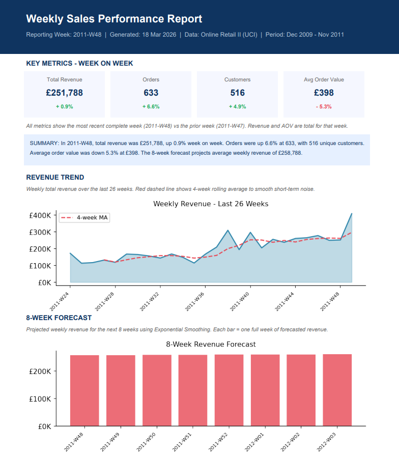
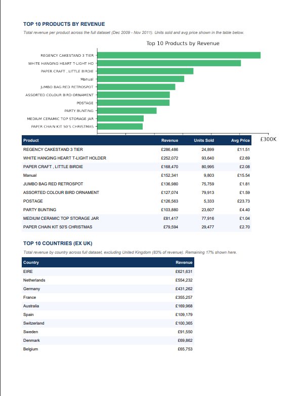

A single Python script that runs every Monday at 8am, cleans a million-row dataset, generates charts, forecasts the next 8 weeks of revenue and produces a professional 2-page PDF report — with zero human involvement.
"We have no automated way to monitor weekly performance — reports are manual, slow, and we have no forward visibility."
— Operations Manager, UK Online Retailer
Every Monday morning the operations team manually pulled last week's sales data into a spreadsheet and emailed it to the team. The process took 2 hours, was prone to human error, and provided no forward-looking visibility into demand.
Loads both sheets from the Online Retail II Excel file and concatenates into a single dataframe. Removes cancellations (invoices prefixed 'C'), missing Customer IDs (23% of rows — guest checkouts), negative quantities and zero-price rows. Retains 805,549 clean rows — 75% of raw data.
Aggregates all orders by ISO year-week to produce weekly Revenue, Order Count, Unique Customers, Items Sold and Average Order Value. Also computes Top 10 products by revenue and Top 10 international markets excluding the UK (which alone accounts for 83% of revenue).
Fits a Holt's linear trend Exponential Smoothing model to 104 weeks of clean weekly revenue data. The final 2 weeks are trimmed to avoid partial-week distortion at the dataset boundary. Projects 8 weeks of forward revenue with optimised parameters.
Generates 3 charts sized for PDF layout, then assembles a professional 2-page PDF. Every element — KPIs, charts, tables, captions and the narrative summary — is computed fresh from the data on each run. No manual editing ever required.
The script is configured in Windows Task Scheduler to run every Monday at 8am. The report is saved to a defined output path automatically with the week number in the filename — no human involvement required after initial setup.


python-automated-sales-report/
│
├── README.md
├── weekly_report.py
├── weekly_report.ipynb
│
├── charts/
│ ├── eda_overview.png
│ ├── weekly_metrics.png
│ ├── forecast.png
│ ├── forecast_components.png
│ ├── report_page1.png
│ └── report_page2.png
│
└── outputs/
└── weekly_report_2011_W48.pdf
pip install pandas openpyxl matplotlib statsmodels fpdf2DATA_PATH and OUTPUT_PATH at the top of weekly_report.py to your local paths.python weekly_report.py — PDF saved to output path automatically.weekly_report.py.